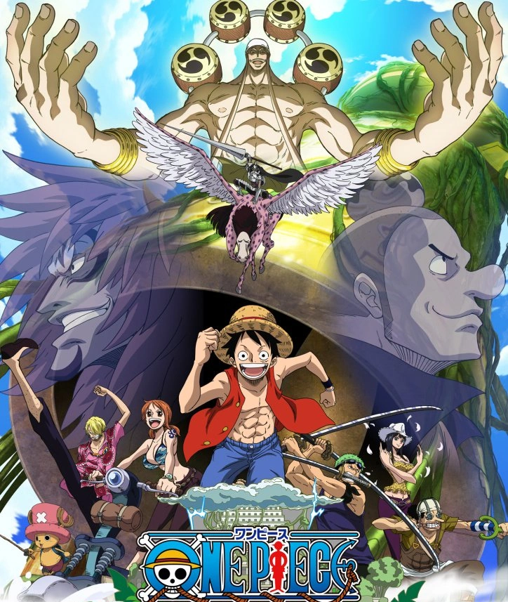

The Straw Hats arrive on the Sky Island Skypiea and learn of its connections to Jaya and Mont Blanc Noland's tale of a lost city of gold. As the crew embarks in search of treasure, they become entangled in a three-way war between the native Skypieans, the vengeful Shandians, and the land's cruel "god", Enel.
Ascending the Heavens: Arriving at the White Sea
Having ridden the Knock Up Stream, the Straw Hats find themselves in a sea of clouds (which, as they find out, has the same effect as normal water on a Devil Fruit user), but before they have a chance to relax, they are quickly attacked by a strange man in a mask who is riding on the clouds. The crew are unable to defend themselves, but they are thankfully saved by an old knight[1] named Gan Fall, who rides on a bird with Devil Fruit powers named Pierre. He points out to them that the reason that they could not fight back against the "Guerrilla" was due to the thin air, though immediately afterwards the crew says that they are starting to get used to it. Gan Fall gives them a whistle to summon him in case they run into more trouble, and the crew continues on.
The ship reaches the shore of Angel Island, the main part of Skypiea, where they meet a girl named Conis and her father, Pagaya. They let the crew come into their house so they can introduce them to Skypiean society, but Nami decides to stay at the ocean and try out Pagaya's Waver, a device similar to a jet-ski that can move under its own power without any wind. While Conis explains the use of Dials, Nami ends up riding the waver to a nearby island with a huge forest. When Sanji points out that Nami is gone, Conis and Pagaya explain that the nearby island is known as Upper Yard. Upper Yard is a forbidden sacred ground where God Enel and his priests reside, and no one must ever set foot on it. This immediately sparks Luffy's interest, and he commands that they head out to "rescue Nami", but he makes it obvious that he simply wants to go to Upper Yard to explore and have an adventure.
The crew starts packing up to leave with Nami, Chopper, Robin, and Zoro at the ship while Luffy, Sanji, and Usopp get food and supplies from Pagaya's home. Suddenly, the ship is grabbed by a "Super-Express Speed Shrimp" that carries them to Upper Yard. Luffy, Sanji, and Usopp, led by Conis, go to Lovely Street in order to get a boat to rescue them. Conis lends them her dial-powered ship, the Karasumaru, but before they leave, Luffy notes that she was shaking the entire time she was leading them. Conis reveals that she was the one who called the shrimp to take the ship and is intentionally leading them to Upper Yard—it is God Enel's will that they lead criminals to that island, and not following it will result in death. Upon hearing Conis say this, all of the townspeople run away. True to her word, Enel strikes and fires a massive beam of energy at her from the sky, but she is saved by the knight, Gan Fall. He explains that since both she and her father will be considered criminals, he will take them back to his house, which is out of Enel's range.
God's Judgment: The Four Ordeals of Upper Yard
Luffy's group enters Upper Yard, and they travel through the "Milky Road", a cloud river, avoiding several dangerous traps. Eventually, they reach a hand stature with the river branching off into four paths going through each finger, each labeled with a different ordeal: "Ordeal of Swamp", "Ordeal of Iron", "Ordeal of String", and "Ordeal of Balls". Luffy chooses the Ordeal of Balls, thinking that it sounds fun, and after a drop, they find themselves in an area of the forest with several cloud balls floating around. Each of the "Surprise Balls" contains a different object—some contain snakes, other explosives, other harmless flowers, etc. At this point, the priest Satori appears and attacks them, but they find that he is somehow able to read their minds using an ability called "mantra".[11] After a long and difficult battle, they manage to get past his mantra by turning his own attacks against him. Sanji debuts a new move called Concasse which is enough to knock Satori out.
Meanwhile, the priest Shura arrives at the Sacrificial Altar to find that Chopper is the only one left to kill. In response, Chopper uses the whistle to call Gan Fall. Shura heavily damages the ship with his fire-based attacks, but before he can finish off Chopper, Gan Fall attacks. They seem to be evenly matched, until Shura starts his "Ordeal of String", which activates several dials that shoot out nearly invisible string to tangle up the foe. Gan Fall, Pierre, and Chopper end up falling into the clouds
Nami, Zoro, and Robin return to the Altar, and at the same time Luffy's group finally arrives. It's getting dark, so the crew decides to camp out in the forest—if they were found, they would have more room to fight and they would not destroy the Going Merry more. The Straw Hats pool all of their information together, and surmise that the Upper Yard is actually the lost City of Gold. With this information, they decide to steal from the gold city before they go back to the Blue Sea. In order to come up with a plan, Nami puts the maps of Jaya and Skypiea together to form the image of a skull. Noland's logbook stated that the city of gold was in the skull's right eye, which they realize is referring to Jaya's geography. To celebrate, Luffy starts a huge bonfire, much to Nami's annoyance, since it will just get the priests' attention. Along with a pack of wolves, the Straw Hats dance around the fire as an "Eve of Gold Festival". At this point, Gan Fall regains consciousness. He explains to Robin that objects from the Blue Sea sent to the White Sea by Knock Up Stream are considered very valuable treasure. The most valuable was the dirt and soil called Vearth, which can rear plant life much better than cloud can, causing a religious reverence for it by the Skypieans. When Upper Yard was launched into the sky hundreds of years ago, it was considered a holy land, which led to a war with the native Shandia over control of the lan
War for Upper Yard: Enel's Survival Game
Luffy's group set off for the gold city, only to encounter a gigantic python. Due to its attack, the group gets separated, with only Robin still on the right path. On the Going Merry, Gan Fall recounts the history of his country, the origins of the Shandians and the rift between their people. He tells them that six years ago, Enel appeared out of nowhere leading a powerful army and gained control over Upper Yard. Gan Fall then explains how dials can be used as weapons, demonstrating with his Impact Dial, which can absorb and reflect impact attacks.
During all of this, Robin reaches the city of gold, which has been separated onto different layers of clouds, to find that there is no gold, but she instead finds out that a Poneglyph is in the city—specifically, on the golden bell. However, the bell is nowhere to be found. Meanwhile, Chopper climbs a giant beanstalk he finds in search for the gold city, only to end up in the domain of Priest Ohm, who badly wounds him. On the Going Merry, Aisa tries to escape, but when Nami chases after her, the python appears and attacks them, because Luffy is hitting the lining of his stomach out of frustration. Using the waver to escape, Nami and Aisa end up even deeper in the jungle. At the same time, the South Bird, while trying to steal Zoro's backpack, carries Zoro through the air but drops him when the snake tries to eat him.
Luffy returned to Shells Town and told Rika this, to her delight. She revealed that Captain Morgan and Helmeppo ruled harshly over the town and had people put to death for little reason; Zoro had done nothing wrong, as he was arrested after saving her from one of Helmeppo's ferocious dogs. Helmeppo then came walking into town and ordered the citizens to bow down to him. He stated that Zoro would be executed in three days, causing Luffy to confront him over the promise he made. Helmeppo revealed that he was only joking about that, causing Luffy to punch him to the ground. Koby had to hold Luffy back from attacking him further, but Helmeppo promised to tell his father and get his revenge. As the citizens retreated into their homes, Luffy headed back to the Marine base to recruit Zoro again
As Zoro fights, eventually defeating, Ohm, the group in the python ends up meeting with Luffy.[36] In the ruins of the gold city Shandora, Robin encounters Enel, who explains that he took the gold from all the buildings, but expresses interest when Robin mentions the gold bell. On the edge of the island where the Going Merry is, one of his soldiers warns them that Enel is planning on destroying the sky islands, and Enel attacks him, along with Pagaya, with his lightning attack, leaving Conis to go warn everyone on Angel Island. Enel then destroys the clouds above him and Robin, sending Zoro, Wyper, and the snake falling to where he is. Gan Fall and Nami manage to escape the snake, accidentally leaving behind Luffy, Aisa, and Pierre, and after Enel electrocutes the python, he announces that with three minutes until time is up, there are six survivors left. One of them will have to go. When he asks the remaining survivors who it should be, they unanimously decide Enel.
In the present, as the Marines shot at Koby and Zoro, Luffy jumped out of the window and landed in front of them, causing the bullets to hit his body and ricochet back at the Marines. Luffy presented the swords to Zoro, who revealed that he wielded all three of them as a Three Sword Style user. With the Marines now unquestionably against him, Zoro decided to take up on Luffy's offer and become a pirate. The Marines then took out their swords and charged toward Luffy and Zoro, and Zoro told Luffy to give him his swords, allowing him to cut himself free and intercept all of the Marines at once. Luffy then hit all of the Marines with a stretched leg to knock them away. Morgan ordered his men to shoot themselves for their incompetence, and Luffy charged to fight him. Luffy quickly got the upper hand against Morgan, but Helmeppo then held Koby at gunpoint to stop Luffy from harming his father. Koby did not flinch in the face of death, and Luffy simply punched Helmeppo with Gomu Gomu no Pistol. Morgan rose back up to attack him from behind as he did this, but Zoro quickly cut him down. As Morgan and Helmeppo lay defeated, the Marines started celebrating.
Luffy, Zoro, and Koby went to Rika's mother's restaurant to eat, and Luffy and Zoro plotted to head for the Grand Line. Koby warned them against this as their friend but thanked them for teaching him to stand up for himself. The Marines then came to the restaurant, and although they were grateful to the pirates for defeating their captain, they still asked for them to leave. Luffy and Zoro did so, and the Marines asked Koby if he was going with them. Luffy then started to tell them about Koby's history with Alvida, causing Koby to punch him. Luffy punched back and started a brawl, causing the Marines to believe they were not friends. As Luffy and Zoro left, Koby asked the Marines to let him enlist, promising to work any job. Although one soldier still did not trust him, the chief Marine accepted his request. As Luffy and Zoro set sail, Koby then arrived to salute them, and to his surprise he was joined by the rest of the Marines in thanking the pirates. Luffy told Koby they would meet again and looked forward to heading for the Grand Line.